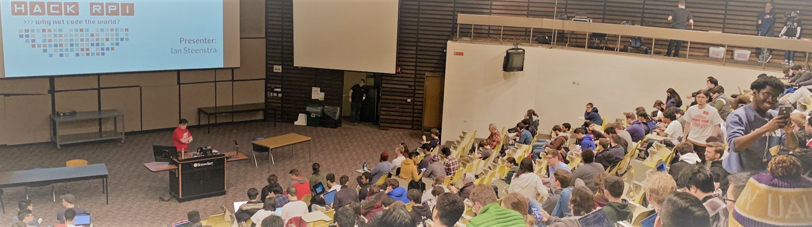
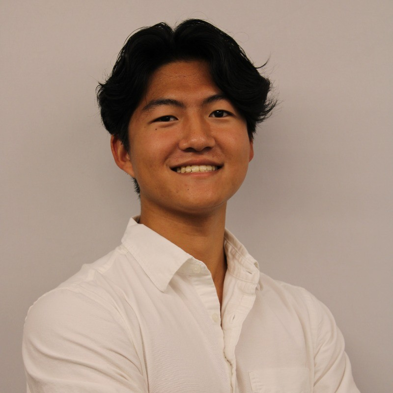
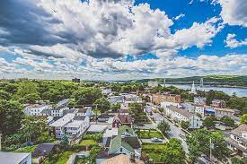

 
I am a student at Rensselaer Polytechnic Institute studying Computer Science & Information Technology and Web Sciences. I've been programming for a little under 3 years now and I love building cool projects. Some notable projects was my work in building a S&P 500 Machine Learning Model and even this personal website! I also participate in many off-campus activites and clubs such as HackRPI, Society of Asian Scientists and Engineers, and Rensselaer Outing Club to name a few. I strive to keep learning and growing during my time at Rensselaer and I love to share what I've done. Come check out my projects in my projects page!
I grew up in Cortlandt Manor in Westchester County, New York, where I attended Hendrick Hudson High School breaking into Computer Science, by the Hudson River. Some of my favorite things to do while back home are backpacking, sailing on the Hudson, and spending time with my family.

I study Computer Science & Information Technology and Web Sciences at Rensselaer Polytechnic Institute. What gets me excited about learning Computer Science is Machine Learning/AI and being able to build and program projects using ML/AI algorithms and methods. For my recently added dual major in Information Technology and Web Sciences, I am very interested in learning about web development, databases, cybersecurity, and more through the major's coursework. I am passionate about this field and I am excited to get more hands-on work throughout my career and improve my skills and experiences.